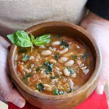

Sandra's Butterbean Soup

This recipie was shared with me with a friend of mine. It makes for a delicious lunch.
Ingredients
- 1 tin butterbeans (240g drained weight)
- 3 tbsp olive oil
- 3 garlic cloves, minced
- 2 shallots, diced
- large handful fresh basil
- 200g cherry tomatoes, halved
- 120ml vegetable stock
- salt and pepper
Method
- Add olive oil to a pan on medium heat. Add in garlic and shallots cooking for 2 minutes until soft
- Add tomatoes to the pan and cook until they begin to soften and split, then add basil and cook
- Pour stock into pan and simmer for 3-4 minutes
- Add butter beans and simmer until heated through
- Season with salt and pepper